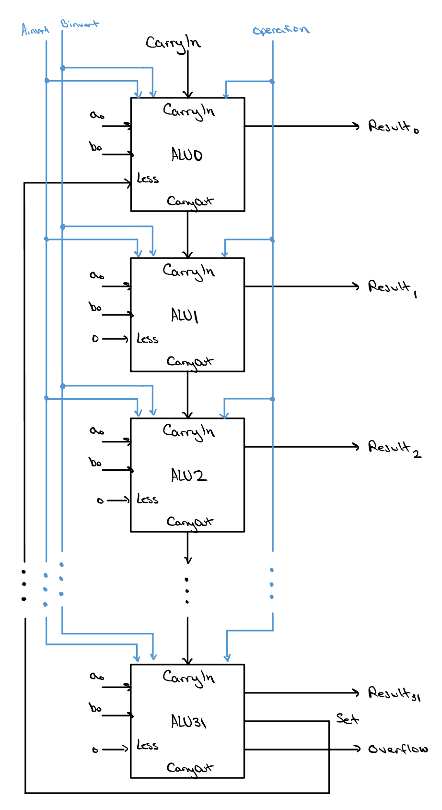
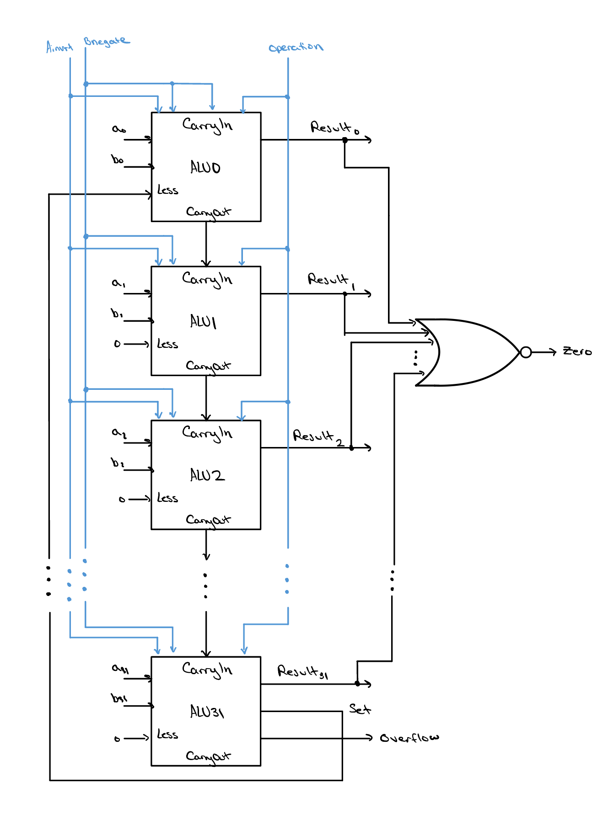
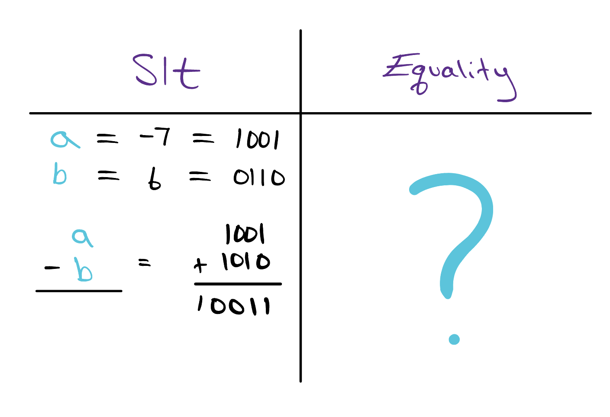

The Complete 32-bit ALU
We've built and perfected a single ALU slice. Now we
line up thirty-two of them, chain each slice's carry into the next, and
route the most significant slice's set signal back down to
the bottom — and just like that, our one-bit block becomes a
complete, fully working 32-bit ALU.

Unfinished Business
In the last lesson, we briefly discussed how we would edit our ALU
slices to accommodate the slt instruction. However, we
didn't quite get to how the set signal from the most
significant slice would interact with the rest of the slices to
properly produce the final slt result. As we saw from the
last lesson, the set signal by itself is not enough to
produce an output of 000…01 if slt evaluates to
true, or 000…00 if slt evaluates to false.
Instead, by routing the set signal back to the least
significant bit's less input and choosing output 3 of the
mux (operation = 11), we can effectively
produce a 1 in the least significant bit of our result.
But what do we do with the other less inputs? Well, the
key insight is noticing that no matter if slt evaluates
to true and we get a result equal to 000…01, or if
slt evaluates to false and we get a result equal to
000…00, all of bits [1:31] are 0! The solution to our problem
is therefore to simply hardwire, or to force, the
less input on all of bits [1:31] as 0!
The image at right shows precisely this. The sequence of events
during the execution of an slt instruction is as
follows:
-
The ALU's control bits are set so that
Binvert= 1 andoperation= 11, configuring every slice to subtract and to select itslessinput. -
The expression
a−bis computed across the chain. -
The sign bit of that answer — produced in the most
significant slice — encodes whether
sltevaluated to true, so it is routed back down to the first slice'slessinput. -
Each slice then passes its
lesssignal through the mux to itsResultbit. -
A
Resultof 000…01 meanssltwas true, and aResultof 000…00 means it was false.

Final Touches

As of now, our ALU is fully functional — you could drop it into a processor as-is! However, that processor would be fairly slow and weak, limited to just the AND, OR, NAND, NOR, add, subtract, and slt operations. In this course, we will add one more capability that proves incredibly useful during branch instructions. We can already test for less-than (and therefore greater-than), but we can't yet test for equal to!
Just like with our other operations, we can implement this with a
simple hardware trick that keeps our design relatively unchanged.
Recall that during the design of the slt operation, we
used the fact that to compare a to b you
can perform the subtraction
a − b. If a − b < 0, that
means a is less than b. To check if
a is equal to b, the same
operation is performed, but this time we need to check whether our
result is equal to 0. To do this, we can make use of one of
our old friends — a gate that outputs a 1 if and
only if all of its inputs are 0. You guessed it: the NOR
gate!
By feeding every slice's Result bit into a single
32-input NOR gate, we introduce one new output signal,
zero, that goes high exactly when every
Result bit is 0 — that is, when
a − b = 0, meaning a and
b are equal. Not only will we then be able to test for
equality, but we will also be able to test for inequality
(a ≠ b), which is the case whenever
zero = 0.
Play Time
Check Yourself
Last lesson, we saw that slt needs extra logic to stay correct when a − b overflows. The equality test (a = b) also works by subtracting and inspecting the result. So, when performing the equality test, do we need to take overflow into account the way we did for slt? If so, why?
